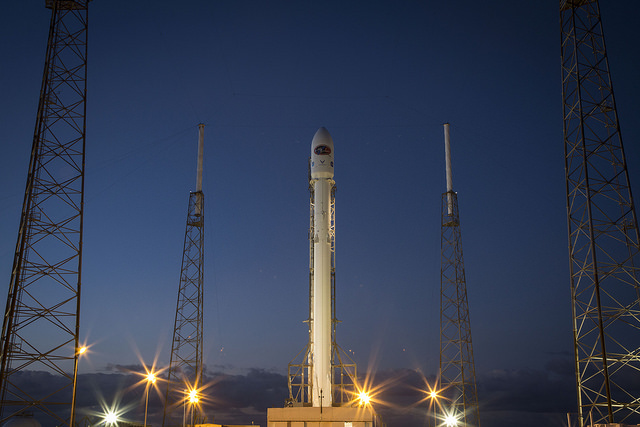

A script-free, same-origin gallery for the Web Awesome zoomable-frame demonstration.

Falcon 9 rocket launch — public domain (SpaceX)Coffee cup — CC0 (Rachel Michetti)Hubble eXtreme Deep Field — NASA public domainEileen Collins portrait — NASA public domain